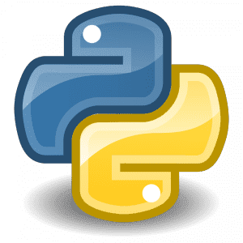

Popular Programming Languages
Computer programming languages allow us to give instructions to a computer in a language the computer understands. Just as many human-based languages exist, there are an array of computer programming languages that programmers can use to communicate with a computer. The portion of the language that a computer can understand is called a "binary". Translating programming language into binary is known as "compiling". Each language, from C Language to Python, has its own distinct features, though many times there are commonalities between programming languages.
These languages allow computers to quickly and efficiently process large and complex swaths of information. For example, if a person is given a list of randomized numbers ranging from one to ten thousand and is asked to place them in ascending order, chances are that it will take a sizable amount of time and include some errors.
There are dozens of programming languages used in the industry today. We've compiled overviews of the 5 most important, relevant and in-demand of these languages below. (ref by :Computerscience)
(ref by :Tiobe)
1-Python

Python is an advanced programming language that is interpreted, object-oriented and built on flexible and robust semantics.
WHO USES IT?
Professions and Industries:
Python developers, software engineers, back end developers, Python programmers
Used by employers in information technology, engineering, professional services and design
Major Organizations: Google, Pinterest, Instagram, YouTube, DropBox, NASA, ESRI
Specializations and Industries: Web and Internet development (frameworks, micro-frameworks and advanced content management systems); scientific and numeric computing; desktop graphical user interfaces (GUIs)
2-Java
ava is a general-purpose, object-oriented, high-level programming language with several features that make it ideal for web-based development.
WHO USES IT?
Professions and Industries:
Software engineers, Java developers
Used by employers in communications, education, finance, health sciences, hospitality, retail and utilities
Major Organizations: V2COM, Eclipse Information Technologies, eBay, Eurotech
Specializations and Industries: Internet of Things (IoT), Enterprise Architecture, Cloud Computing
3-Java Script
JavaScript is a client-side programming language that runs inside a client browser and processes commands on a computer rather than a server. It is commonly placed into an HTML or ASP file. Despite its name, JavaScript is not related to Java.
WHO USES IT?
Professions and Industries:
JavaScript developers, Web developers, software engineers
Used by employers in Information Technology, Engineering, Design, Marketing, Finance and Healthcare
Major Organizations: WordPress, Soundcloud, Khan Academy, Linkedin, Groupon, Yahoo and many others
Specializations and Industries Where JavaScript is Used Most: Front End Website Development, Gaming Development
4-C
C Language is a structure-oriented, middle-level programming language mostly used to develop low-level applications.
WHO USES IT?
Professions and Industries:
Software developers, computer engineers, business and systems analysts, IT and Web content administrators, embedded software engineers
Used by employers in Information Technology, Engineering, Management, Healthcare and Professional Services
Major Organizations: Microsoft, Apple, Oracle, Cisco, Raytheon
Specializations and Industries Where C Language is Used Most: Embedded Systems, Systems Programming, Artificial Intelligence, Industrial Automation, Computer Graphics, Space Research, Image Processing and Game Programming
5-C#
Pronounced C-sharp (not C-hashtag), C# is a multi-paradigm programming language that features strong typing, imperative, declarative, functional, generic, object-oriented and component-oriented disciplines.
WHO USES IT?
Professions and Industries:
C# developers, automation test engineers, software engineers, senior .net Web developers
Used by employers in Information Technology, Engineering, Design, Professional Services, Management and Quality Control
Major Organizations: Microsoft Intel, Hewlett Packard
Specializations: Windows-based platforms